k-Day 179｜入住方艙
決定從伊爾克什坦口岸出境。
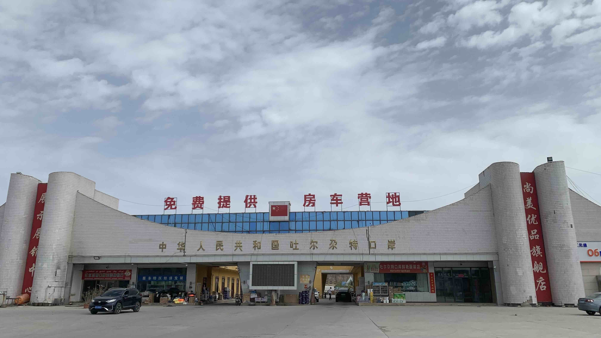
離開托帕前，到舊口岸補水，順便參觀裡面的展示區。
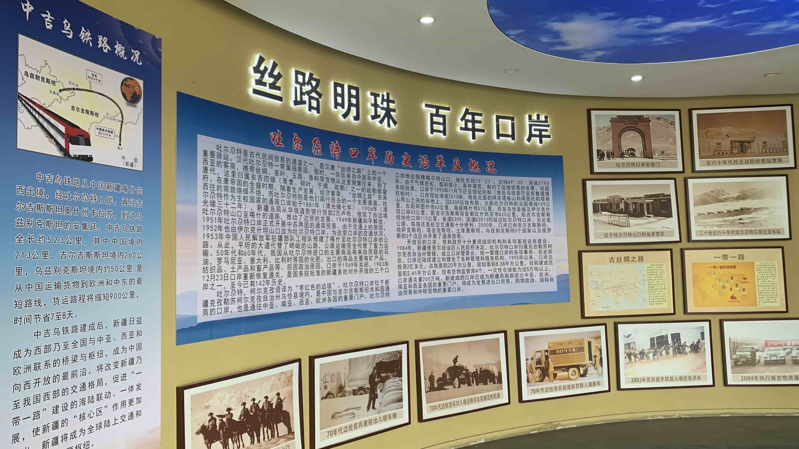
牆上展示了古絲路，以及五十多年來口岸的沿革。即便身為台灣人，了解此處如何在歷代人的經營下，逐漸長成今日大國樣貌的一部分後，也不免生出一絲敬意。
道路阻且長。和二十三號來到此處的每一天，都深切感受到人類移動至此的不易。
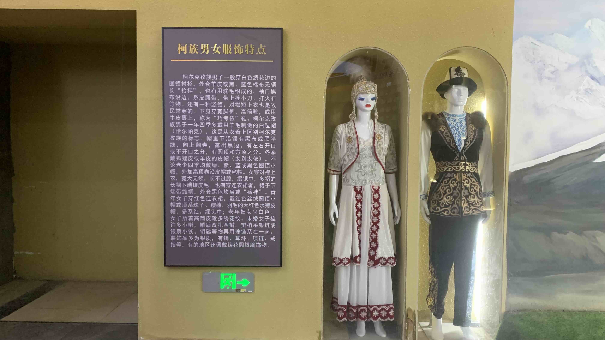
牆上的服飾和維族人不太一樣，仔細看了介紹，原來還有叫做「柯爾克孜族」的族群生活在此。
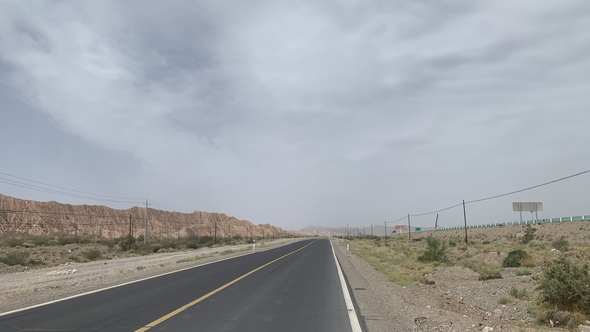
幾個月後，終於對乾燥的風景失去興奮感。
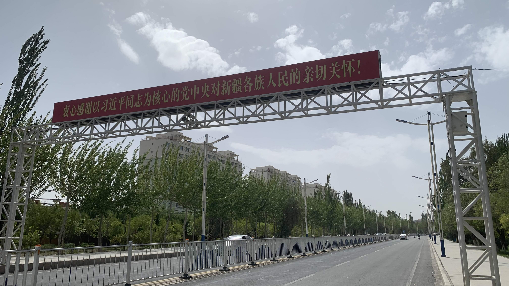
倒是路上出現的這類標語為旅途帶來些新鮮感：
「衷心感謝以習近平同志為核心的黨中央對新疆各族人民的親切關懷！」
在安全離開中國國土前，我對此表示尊敬與理解。
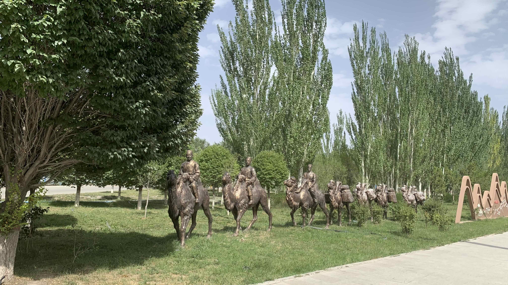
象徵絲路的駱駝商隊雕塑穿的是漢人服飾，方向也是往西域的。
比起萬使來朝，更喜歡向外開拓的敘事？
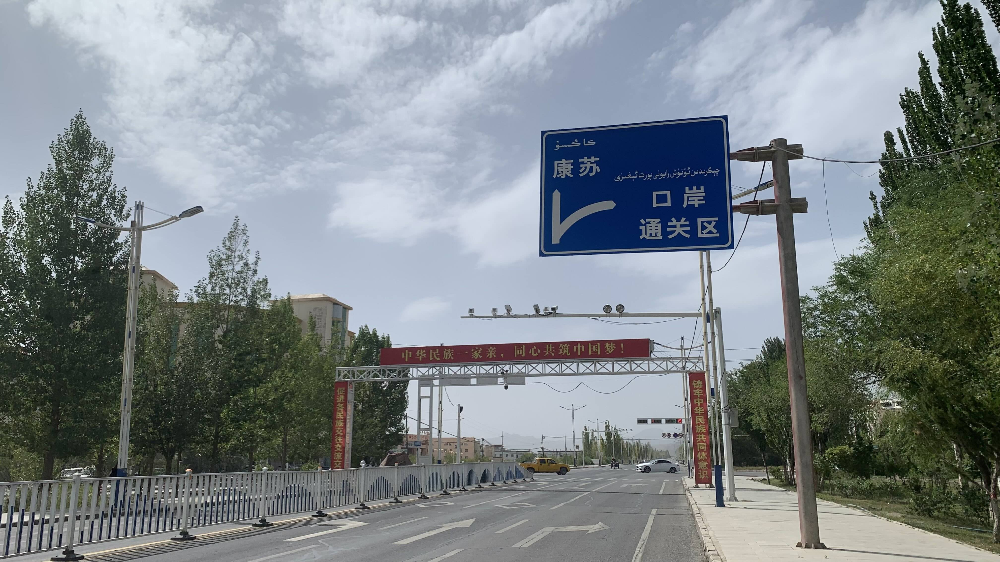
口岸不遠處掛著「中華民族一家親，同心共築中國夢」的標語。
沒有解釋中國夢究竟在夢什麼，大家都只能做同一種夢的意思？
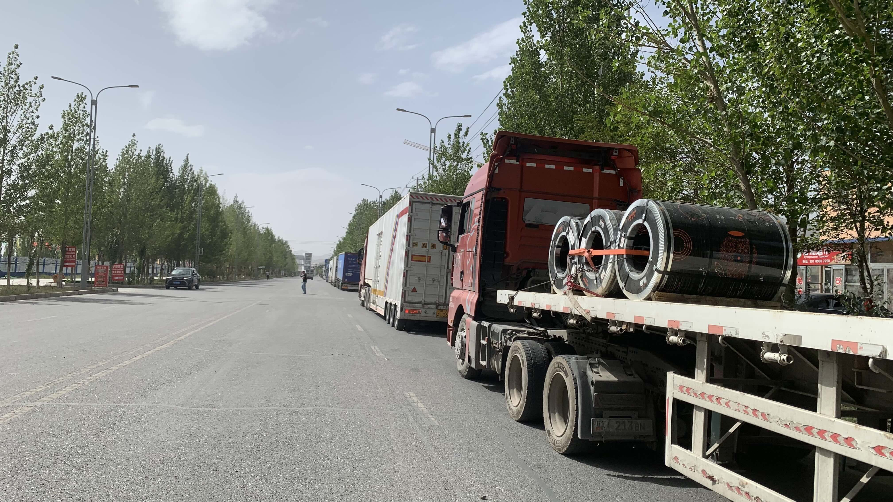
跟著路邊的卡車車流抵達口岸門口，警察卻告訴我，這裡是給大卡車通關的，自行車不走這裡。真正的口岸還有兩百公里。
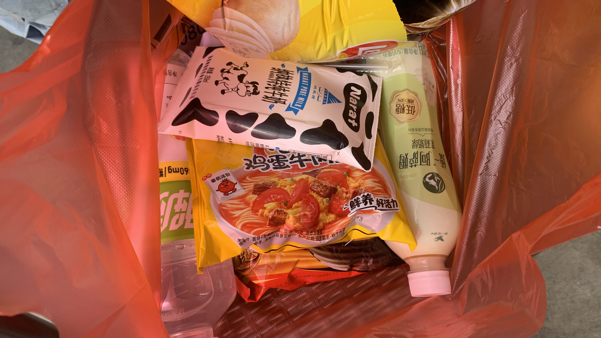
只好到路邊買點飲料和今天的晚餐。不知為何，最近比起咖啡，更喜歡買奶茶和牛奶。難道連口味都能在移動中被環境塑造嗎？
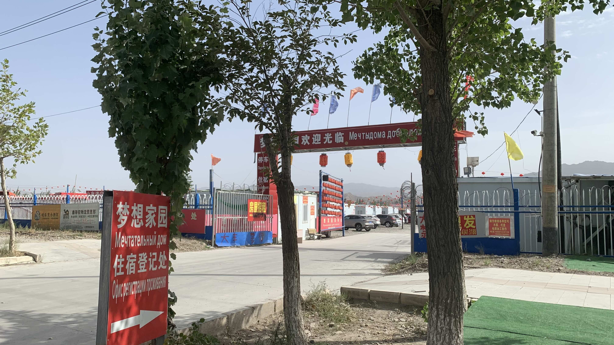
司機之家的房間已經售罄。櫃檯前一位正在登記的客人跟我說：「你出門後往前走，有方艙醫院改建的旅社，一個晚上只要50塊。」
跟隨他的指示，來到掛著「夢想家園」的大門口。家園內是成排的方艙，都是 COVID-19 疫情期間興建的。
雖然已經知道價格，還是禮貌詢問了一個人的房價。
前台報價一晚80元，聽到我是騎自行車來的，直接降價到50元。
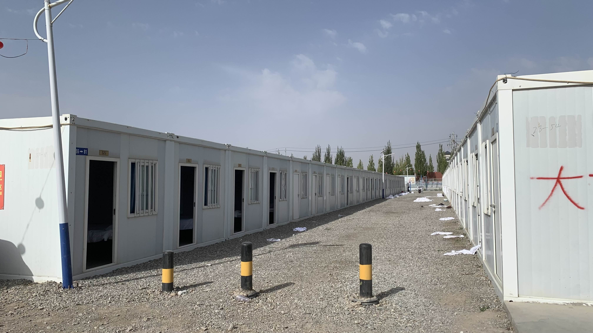
這裡住的幾乎都是卡車司機，長住和短住有不同價格。牽著二十三號，前台帶我到比較安靜的角落。
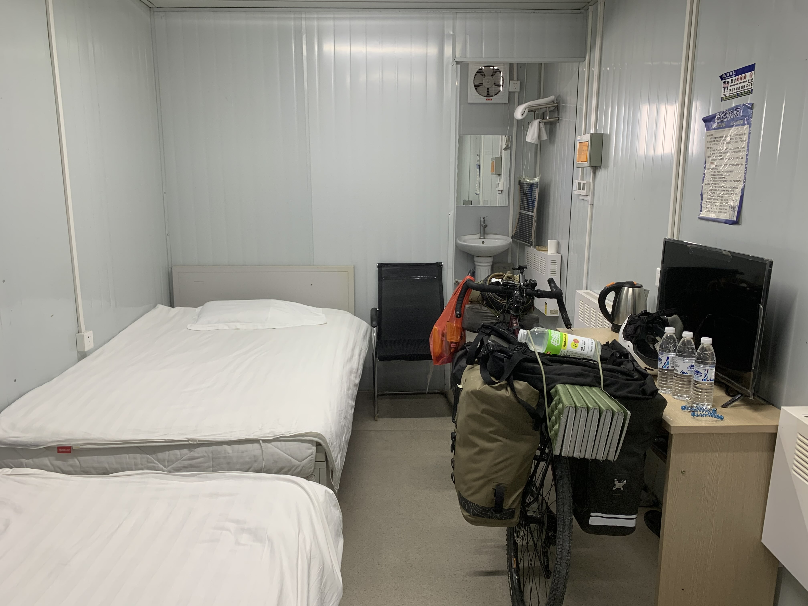
二十三號可以進門，前台和我一起把車推進方艙後離開，不久又拿了三瓶水回來給我。方艙內部還算乾淨，浴室有真正的熱水。昨天的150元就當是幫酒店老闆付裝潢貸款吧。
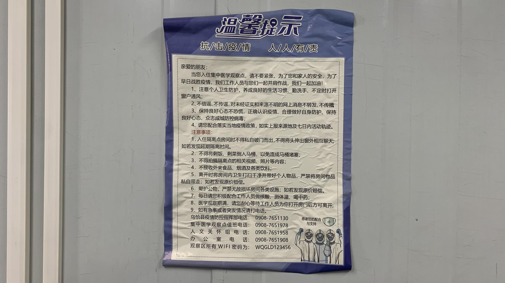
幾年前的防疫規矩還貼在艙內牆上，吃著煮好的泡麵閱讀條文。人類的地景中也有這樣因為天災人禍遺留下來的臨時空間呢。
今日花費：住宿 5o元